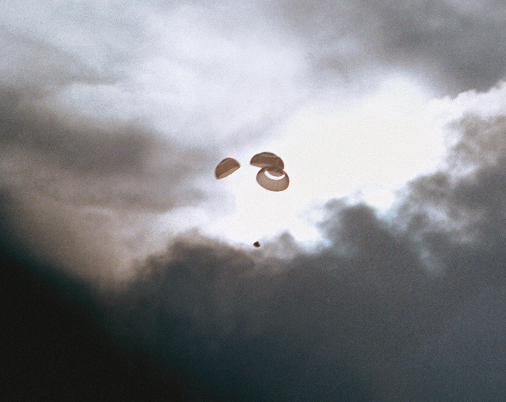

Parachute Deployment

The Final Critical System
They had survived the explosion, the freezing lifeboat, the power-up, and the fireball of re-entry. Radio contact was back. One system remained — and it absolutely HAD to work.
The Parachutes
Without them, Odyssey would hit the Pacific at about 300 mph. Everything else could go perfectly — but if the parachutes failed, the crew died.
How Apollo Landed
🪂 Three-Stage Deployment Sequence
Stage 1: Drogues (2 chutes)
At about 24,000 feet, mortars fire two 16.5-foot drogue chutes. They steady the capsule and slow it from roughly 300 to 175 mph.
Stage 2: Pilot Chutes (3 small chutes)
At about 10,000 feet the drogues cut loose, and three small pilot chutes drag the huge mains out of their bags.
Stage 3: Mains (3 chutes)
Three orange-and-white canopies, each 83.5 feet across. They open partway first — called "reefing," to soften the shock — then blossom to full size and lower the capsule to a splashdown at about 22 mph.
Redundancy built in:
Odyssey could land safely on just two of the three mains — the hit would simply be harder. Three good chutes meant a gentle ride.
❄️ The Cold-Soak Worry
The parachutes were packed in Odyssey's nose — and Odyssey had been powered down and freezing, near 38°F, for four days. No Apollo spacecraft had ever been cold-soaked that long.
- 🧊 Would the cold mortar charges fire?
- 🧊 Would chilled, condensation-damp nylon unfurl — or stick together?
- 🧊 Would the reefing cutters work so the chutes could fully open?
Engineers believed the chutes would work. But there was no way to test them in flight — they would get exactly one chance.
GET 142:48:45 - Drogues Away
Altitude: ~24,000 feet | Speed: ~300 mph
Barely two and a half minutes after Odyssey came out of radio blackout, the crew felt a THUMP — the drogue mortars firing right on schedule.
GET 142:49:17 — Jack Swigert: "We got two good drogues."
GET 142:49:20 — CAPCOM Joe Kerwin: "Roger that."
The cold hadn't beaten the pyrotechnics. The capsule steadied and kept slowing. But the drogues were the small chutes — the real test was still coming.
GET ~142:49:30 - Three Good Mains
Altitude: ~10,000 feet | Speed: ~175 mph
Seconds later the drogues cut away, the pilot chutes streamed out, and three huge canopies snapped open — reefed first, then full. Television cameras with the recovery fleet found Odyssey swinging under three orange-and-white mains, and the picture went out live to a watching world.
"Odyssey, Houston. We show you on the mains, it really looks great."
— CAPCOM Joe Kerwin, GET 142:50:06In Mission Control, controllers who had barely slept in four days were on their feet, cheering. After everything that had gone wrong, the last critical system had worked.
Read the transcript in the Apollo 13 Flight Journal.
Five Minutes of Peace
GET ~142:50 - 142:54:41 (about five minutes under the mains)
After four days of cold, exhaustion, and fear: gentle swaying under three big chutes. Sunlight in the windows. The blue Pacific rising slowly to meet them, recovery helicopters already circling.
The crew cinched their harnesses tight, pressed their heads back against the rests, and braced for impact at about 22 mph.
Technical Success
All Three Parachutes: PERFECT
The mortars fired, the lines deployed clean, and the nylon showed no damage from the four-day cold soak. Descent rate: about 22 mph — right on target.
The parachutes — like so many other systems on Apollo 13 — worked exactly as designed when it mattered most.
⏰ Final Moments
Altitude: Descending through 5,000... 4,000... 3,000... 2,000... 1,000 feet
Speed: 22 mph
Ocean rushing up to meet them...
Seconds to splashdown.